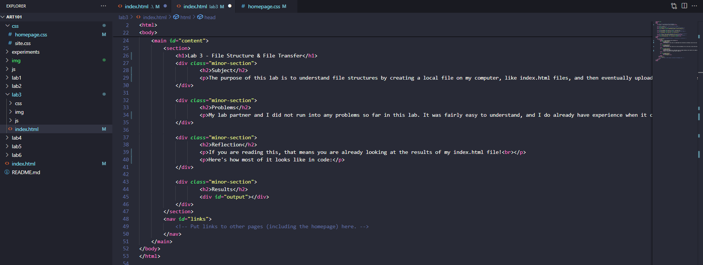

Lab 3 - File Structure & File Transfer
Subject
The purpose of this lab is to understand file structures by creating a local file on my computer, like index.html files, and then eventually upload them to the server!
Problems
My lab partner and I did not run into any problems so far in this lab. It was fairly easy to understand, and I do already have experience when it comes to coding, however I would not consider myself an expert.
Results
If you are reading this, that means you are already looking at the results of my index.html file!
Here's how most of it looks like in code:
